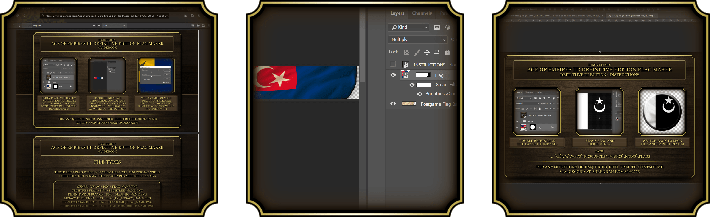

The Age of Empires III: Definitive Edition Flag Maker is a tool which relies on the .PSD file format. It is made for the purpose of making it easier for people to make their own civilisation flags for Age of Empires III: Definitive Edition with as little work and skill required.
The tool can run on both Photoshop and
Photopea.com, an online web-based tool which allows you to edit .PSD files for free.

It also comes with a visual guidebook, visual instructions for each flag type, and a comprehensive readme file for ease of usage.